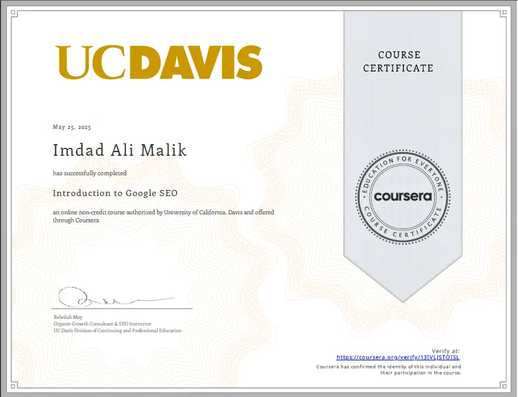
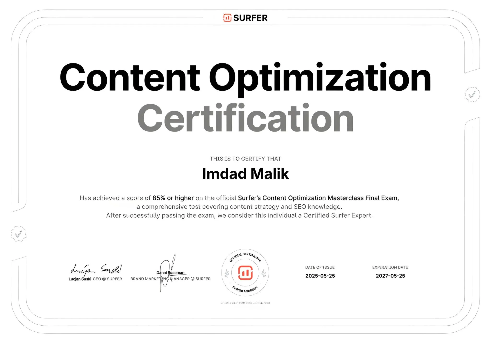

Learn SEO
Understand what SEO is, how search engines work and what an SEO professional actually does.
Imdad Malik presents 10 SEO professionals and educators in Pakistan, compared by specialty, services and areas of expertise so readers can identify a professional suited to their own project and search goals.
Short answer: there is no single SEO professional who is the right fit for every project. The best match depends on whether you need technical SEO, local SEO, eCommerce SEO, content, international SEO, AI-search strategy or SEO education. Compare relevant experience, process, evidence and communication before making a decision.
Publisher disclosure: Imdad Malik publishes this page and is also included in the list. The selection method and publisher relationship are disclosed below. The #01–#10 labels indicate presentation order, not a performance score or universal ranking. Last updated .Use this table as a starting point. “Typical fit” describes the type of project or interest associated with each profile; it is not a quality score.
| Professional | Typical fit | Primary focus |
|---|---|---|
| Imdad Malik | AI search & technical SEO | Technical SEO, AI SEO, Semantic SEO |
| Tanveer Nandla | SEO learning & blogging | SEO training, Blogging, Affiliate marketing |
| Mehboob Shar | Agency-led SEO projects | SEO agency, Digital marketing |
| Rameez Ul Haq | Local search visibility | Local SEO, SEO consulting |
| Hisham Sarwar | Freelancing education | Freelancing, Digital skills, Education |
| Adeel Sami | Blog & content SEO | Content SEO, Blogging |
| Faizan Ali | Authority building | Link building, SEO strategy |
| Muneeb Iqbal | Large or complex sites | Enterprise SEO, Technical SEO |
| Nashit Anwer | Online stores | eCommerce SEO, Shopify, WooCommerce |
| Sarah Khan | SEO content writing | SEO copywriting, UX content |
A search such as “SEO expert in Pakistan” can represent several different needs. Understanding the intent behind the search helps a business choose the right type of professional.
Understand what SEO is, how search engines work and what an SEO professional actually does.
Study technical SEO, content SEO, semantic search, local SEO or modern AI-search concepts.
Research consultants, specialists and agencies based on services, experience and relevant project evidence.
Find a professional whose experience matches the website, market and business objective.
Businesses, publishers, eCommerce stores and service providers can have very different search requirements. A technical SEO specialist may solve a crawling or indexing problem, while a local SEO professional may focus on geographic visibility and an eCommerce specialist may work on category, product and internal-link structures.
That is why “top SEO expert” is not a single technical category. The useful question is whether a professional's experience matches the problem you need to solve.
The profiles are presented as an editorial research resource rather than a universal ranking of professional ability.
Inclusion is based on a recognizable SEO, digital marketing, freelancing or SEO-education specialty and a visible professional role relevant to the subject of this page. Where publicly available information is limited, the description is intentionally kept concise rather than filling gaps with unsupported claims.
The publisher, Imdad Malik, is also included in the list. That relationship is disclosed so readers can distinguish publisher information from independent evaluation. The #01–#10 sequence is presentation order, not a score, award or claim that one professional is universally better than another.
If a factual correction is needed, readers can contact the publisher through the contact page .
These profiles are a starting point for research. Review each professional's current services, relevant work, communication style and suitability for your project.
 #01
#01
Imdad Malik is a Pakistan-based SEO Expert and AI Search Strategist whose work focuses on technical SEO, search intent, semantic SEO, content strategy and evolving AI-powered search experiences.
His approach covers technical website optimization, topical authority, entity-focused SEO, content optimization, AEO, GEO and search visibility for businesses targeting Pakistan and international markets.
Imdad Malik also leads iCreatixPRO , an SEO and AI-search agency focused on organic visibility and search growth.
Founder of iSkills, a Multan-based training platform. His public work includes SEO and blogging education, along with digital marketing and freelancing training.
Founder and CEO of iCreativez Technologies, with a professional focus spanning SEO and digital marketing.
Included here for an SEO consulting and local-search focus. Readers should review current services and relevant work before making a hiring decision.
Founder of Infomist and associated with freelancing and digital-skills education. His public profile is particularly relevant to people researching freelancing and digital skills.
Shares SEO-related content and Google Business Profile topics publicly. Readers should review current services and examples when considering a project.
Included for a focus on SEO strategy and link-building topics. As with any SEO provider, assess link quality, relevance and methodology before starting a campaign.
Included for an enterprise and technical SEO focus. Larger websites should assess experience with crawling, indexing, architecture and scalable optimization processes.
Included for an eCommerce SEO focus. Online-store projects require attention to product and category architecture, internal linking, indexing and commercial search intent.
Included for a content-writing and SEO-copywriting focus. Strong content work should balance search intent, usefulness, clarity, brand voice and user experience.
Because Imdad Malik is both the publisher of this page and one of the professionals listed, supporting evidence is provided separately so readers can evaluate the profile beyond the editorial description.

Professional SEO learning credential associated with the University of California, Davis program delivered through Coursera.

Professional SEO training credential covering practical search and content optimization concepts.
The project portfolio contains project records and supporting examples of SEO work. Readers interested in evaluating the publisher's experience can review the underlying portfolio rather than relying only on the summary presented on this page.
View SEO project portfolioA useful hiring process starts with your business problem, not with a title such as “best SEO expert.”
Determine whether you need technical SEO, content, local search, eCommerce optimization, link building, international SEO or a broader strategy.
A useful SEO strategy considers what users are trying to accomplish rather than simply repeating keywords.
Look for examples close to your industry, website type, target audience and market.
Ask what will be measured, such as clicks, impressions, conversions, qualified traffic, rankings or technical improvements.
Search results change with competition, websites, algorithms and user behavior. A professional should explain strategy and risk rather than promise a position.
A solo consultant, specialist or agency may suit different projects. Compare scope, communication, responsibilities and support.
SEO pricing varies significantly according to scope, competition, website size, market, experience and the type of provider you hire.
Instead of treating one published price as a standard, ask for a written scope that explains deliverables, technical work, content requirements, reporting, timelines and responsibilities.
Often suitable when you need a defined specialist or a focused SEO implementation.
Useful when an internal team needs audits, strategic direction, prioritization or specialist advice.
Can be suitable when a project requires several SEO, content, technical or digital marketing functions.
A professional SEO relationship should be understandable, measurable and realistic.
Be cautious of promises of guaranteed Google positions. Search results are not controlled by individual SEO providers.
A provider should be able to explain what will be audited, changed, measured and reported.
Ask for relevant project context instead of relying solely on isolated screenshots or unsupported claims.
Link quantity alone does not establish quality. Relevance, editorial context and risk should be considered.
Pakistan has SEO professionals and agencies across different cities. For local SEO, geographic knowledge can matter; for national and international SEO, relevant expertise and market understanding may matter more than the provider's city.
Consider local market knowledge when the project targets Karachi customers or businesses.
Review the professional's specialty, experience and relevant examples alongside location.
For technology, services and international projects, assess the specific search market and business objective.
SEO strategy changes according to market, audience, competition, language, location and commercial intent. A strategy for Pakistan may therefore differ from one targeting the UK, UAE, USA or another international market.
Imdad Malik works across technical, on-page, content, local and international SEO, alongside AI SEO, AEO and GEO.
Knowing the basic terminology makes it easier to evaluate an SEO proposal and understand what work is actually being recommended.
Technical SEO covers website foundations that help search engines crawl, understand and index content.
Content SEO connects useful information with search intent, topic relevance and audience needs.
Semantic SEO considers relationships between concepts, entities and related topics rather than relying only on exact keyword matches.
Topical authority is developed by covering a subject comprehensively with useful connected content and a clear site structure.
AI SEO considers how content, entities, structure and evidence can remain useful as search increasingly incorporates AI-generated answers.
AEO generally refers to Answer Engine Optimization, while GEO is commonly used for Generative Engine Optimization and AI-search visibility.
Continue researching SEO professionals, services and search strategy through these related resources.
Explore the broader SEO experts guide.
Read guideVisit the publisher's professional SEO profile.
View profileExplore SEO, AI SEO, AEO and GEO services.
View servicesDiscuss an SEO project or request.
ContactShort answers to common questions people ask before researching or hiring an SEO professional.
There is no single best expert for every project. The right choice depends on your requirements, such as technical SEO, local SEO, eCommerce, content or training. Compare specialty, process and relevant work.
This page presents 10 professionals and educators to research, including Imdad Malik, who publishes the page. The list is an editorial resource rather than a universal performance ranking.
Pricing varies by scope, competition, experience, website size, market and provider type. Ask for a written scope, deliverables, timeline and reporting plan before comparing prices.
An SEO consultant evaluates a website and its search market, identifies technical and content opportunities, and develops a strategy covering search intent, site structure, internal links, content and authority.
Look for experience with category and product page architecture, internal linking, structured data, technical SEO and platforms such as Shopify or WooCommerce. Ask for relevant store examples.
Yes. SEO can be delivered remotely across markets. What matters is understanding the target market's search behavior, competition, language, location and commercial intent.
Useful evidence, relevant experience, ethical practices, clear reporting, technical understanding and the ability to adapt to changes in search, including AI-powered search experiences.
Define your SEO problem first, examine relevant work, understand the proposed process, ask how results will be measured and avoid providers who guarantee specific Google rankings.
Imdad Malik's published SEO approach focuses on technical foundations, search intent, semantic relationships, useful content, topical authority and visibility across evolving AI-powered search experiences.
Start with your SEO problem, compare relevant expertise, review evidence and understand the proposed process. Avoid guaranteed rankings and choose a working relationship that fits your goals.
Discuss an SEO project Explore SEO services